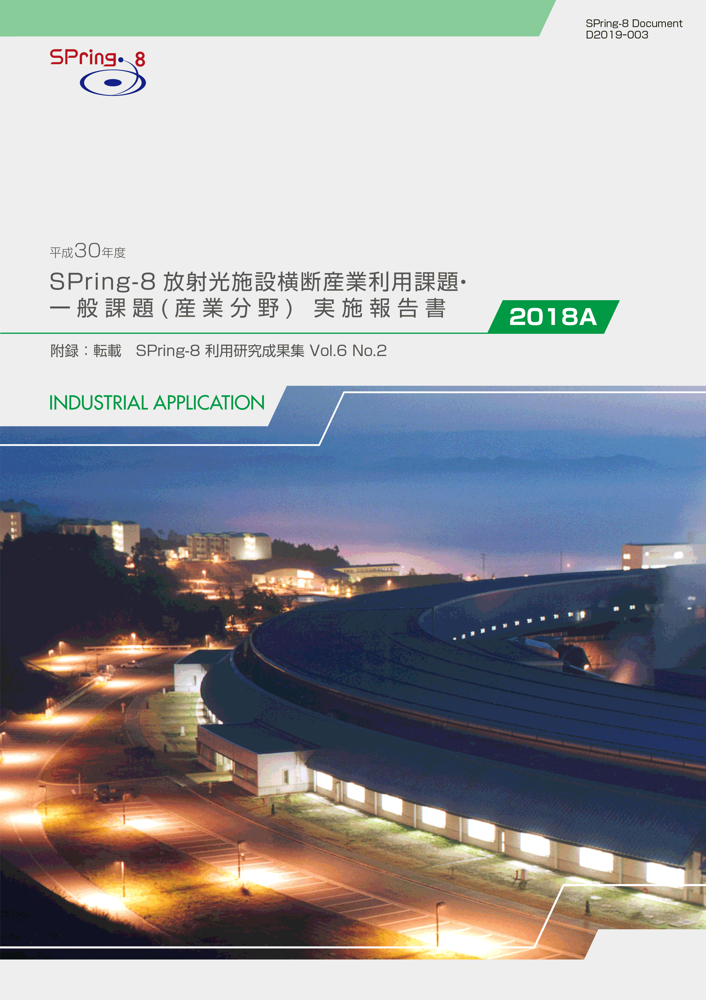
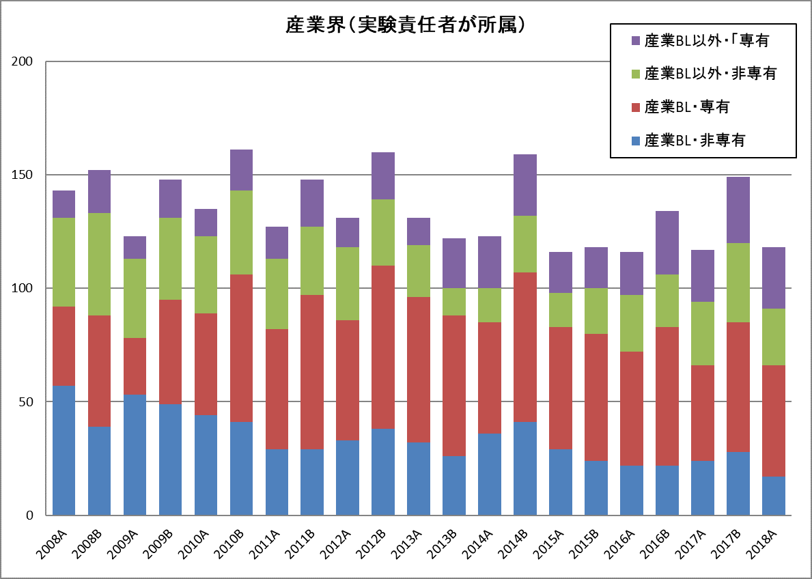

1. はじめに2. 課題募集制度の概要
3. 成果公開の考え方
4. 実施状況
5. 産業利用分野の利用動向
6. 報告書
* 送付を希望される方は、連絡先（氏名、所属、〒住所、E-mail）をご記入の上、 事務局 support@spring8.or.jp までE-mailでご連絡ください。
2018A期は一般課題、重点課題ともに利用制度を大きく変更した。2014A期より実施していた領域指定型重点課題「放射光施設横断産業利用課題」を終了し、それにかわる重点課題として、「放射光施設横断産業利用課題」の募集を開始した。また、適時のSPring-8利用に向けて産業利用ビームライン3本については課題募集期を半期3回、年6回とした。本報告書は2018A期の産業利用分野における課題実施状況の報告を目的として、同利用期に実施した一般課題（産業利用分野）と放射光施設横断産業利用課題のうちSPring-8利用研究成果集としての審査を行わなかった課題の報告書を収録したものである。
- 一般課題（産業利用分野）
一般課題（産業利用分野）の課題とは、課題申請の際に産業利用分野（I）での課題審査を希望した成果非専有の一般課題（課題審査は課題審査委員会産業利用分科会が行う）である。なお、実験責任者もしくは共同実験者に民間企業もしくは、それに準じる機関に所属する者が含まれていることを申請要件としている。民間企業に準ずる機関とは、民間企業からの委託による試験・研究・開発を事業に含んでいる機関と定義している。また、地方自治体が設置している公設置試験場や地方独立行政法人等（○○県工業技術センター）は、民間企業に準ずる機関から除外している。産業利用ビームライン以外での実施を希望する一般課題（産業利用分野）は他分野の一般課題と同様に課題募集は年2回であるが、3本の産業利用ビームラインにおいては年6回（半期3回）の募集を行う。一般課題（産業利用分野）に特徴的な制度は以下の6項目である。
- 産業利用ビームラインI（BL19B2）、II（BL14B2）、III（BL46XU）は半期ごとに3回（1期、2期、3期）の課題募集を行う（年6回課題募集を実施）。これらのビームラインでは成果非専有の一般課題は、審査希望分野が産業利用分野である一般課題（産業利用分野）のみ申請を受付けている（これらのビームラインを指定した申請であるものの、審査希望分野が他分野の課題は申請者の希望にかかわらず産業利用分野で審査する）。*注）
- 新規利用拡大の観点から課題審査において利用経験を考慮する。
- 民間企業利用拡大の観点から課題審査において所属機関を考慮する。
- 課題実施後約2～4か月以内に所定の書式の産業利用課題実施報告書を提出する。なお、この報告書はSPring-8利用研究成果集として審査を受けることも可能である。
- 全採択課題に担当コーディネーターを配置する。
- 科学技術的妥当性に関する審査は
（1）産業基盤技術としての重要性および発展性
（2）社会的意義および社会経済への寄与度の観点を重視して実施する
に重点をおいて実施する。
*注）産業利用ビームライン3本でも大学院生提案型課題は受付けている。一般課題（産業利用分野）と同様の審査が行われる。
- 放射光施設横断産業利用課題
「放射光施設横断産業利用課題」を領域指定型の重点研究課題として、2017年9月25日に指定した。その狙いは以下のとおりである。
近年、産業界の利用を目的とした放射光施設が日本国内に複数設置さて、産業界による放射光利用機会も大きく拡大したため、それぞれの施設の性能や利用制度の特徴を活かした放射光利用が望まれる。しかし、施設ごとに利用者が固定化する傾向も見られ、各施設の特徴を十分に活用した利用になっているとは言えない。放射光施設横断産業利用課題は、最適な施設における放射光産業利用実験の実施促進とそれを通じた利用成果の拡大を目指している。
2-1） 募集の対象
SPring-8以外の日本国内に設置された放射光施設での実験結果を踏まえ、SPring-8利用が適すると判断された産業分野の課題を募集の対象としている（課題申請時にSPring-8以外の施設での実験が実施済みもしくは採択済みであることが必要）。また、一般課題（産業利用分野）と同様に、実験責任者または共同実験者に、民間企業または産業界に準ずる機関等に所属する者を含むことも課題申請の要件としている。
2-2） 対象ビームライン、シフト数割合、及び募集
産業利用ビームラインI（BL19B2）、II（BL14B2）、III（BL46XU）を対象に、ユーザー実験に供するビームタイムのうち20%以内（施設留保を含めたユーザータイムの16%以内）を配分する。課題募集は一般課題と同時期に半期3回行う。
2-3） 審査
一般課題（産業利用分野）に先んじて課題審査委員会産業利用分科会が審査を行う。なお、放射光施設横断産業利用課題として不採択となった課題は、自動的に一般課題（産業利用分野）の課題として、他の一般課題と一緒に改めて審査される。放射光施設横断産業利用課題においては一般課題（産業利用分野）の観点に加えてSPring-8と他施設の利用の有用性も考慮して審査する。
2-4） 報告
WEBより提出するビームタイム利用報告書、利用実験課題報告書に加えて課題実施後約2～3か月以内に所定の書式の産業新分野課題実施報告書を提出する。なお、この報告書はSPring-8利用研究成果集として審査を受けることも可能である。
成果の公開については、放射光施設横断産業利用課題、一般課題（産業利用分野）ともに他の成果非専有の一般課題と同様に学術誌上への論文掲載（博士論文も含む）もしくはSPring-8利用研究成果集への採録による成果公開が求められる。この産業利用課題実施報告書及び放射光施設横断産業利用課題実施報告書の提出は成果の公開とは認定されないが、これらの報告書は著者からの申し出により課題ごとにSPring-8利用研究成果集としての審査を受けることが可能である。SPring-8利用研究成果集としての審査を受けない実施報告書は、JASRIコーディネーター等による校閲を経て課題実施期が終了して約6か月後に出版･公開されるが、それ以外はSPring-8利用研究成果集としての掲載をもって公開とする。
以下に平成30年度2018A期の放射光施設横断産業利用課題、及び一般課題（産業利用分野）の応募・採択結果を表1、表2にまとめる。
- 応募・採択結果 放射光施設横断産業利用課題
表 1．応募時期及び研究機関別課題応募・採択結果
＊放射光施設横断産業利用課題では不採択となり、一般課題(産業利用分野)で再審査で採択された課題を除く(A2期1課題)。募集時期 機関分類 応募数採択数*採択率（%）第1期募集学官3266.7産業界00-合計3266.7第2期募集学官200産業界00-合計200第3期募集学官33100産業界00-合計33100総計8562.5
放射光施設横断産業利用課題の2018A期を通じた応募数は8件でそのうち5件が採択された。SPring-8と並行して利用した施設は、あいちSRセンター、PF等であった。また、産業界からの応募が0件であった。あいちSRセンターや佐賀LS等では、産業界の利用は有償非公開が主流であることから、SPring-8利用経験がない他施設の産業界利用者にとって審査を伴う成果非専有課題の利用に抵抗があることが原因と推定している（成果専有課題が共用ビームラインの産業界実施課題の2/3程度あること、他施設の利用経験者から測定代行をはじめとする成果専有課題の利用相談や問い合わせ頻繁にあることからの推察）。なお、申請要件を満たさないことが理由で不採択となった課題はなく、始まったばかりではあるが申請者は放射光施設横断産業利用課題の趣旨と制度をよく理解しているものと考えられる。
採択された放射光施設横断産業利用課題の実験責任者は、1名を除いて実験責任者としてSPring-8を利用した経験がないことも特記すべき実施結果と考えている。
- 応募・採択結果 一般課題（産業利用分野）
表2．応募時期及び研究機関別一般課題応募・採択結果
*応募数と採択数には放射光施設横断産業利用課題で不採択となり、一般課題として再審査されて採択となったA2期の1課題を含む。一般課題と同時に審査される大学院生提案型課題の応募数（1期 5課題、2期 4課題、3期 7課題）、採択数（1期 4課題、2期 4課題、3期5課題）を除く。12条課題として扱われるJASRI職員が実験責任者の一般課題（応募1期 2課題、2期2課題、3期2課題、採択1期1課題、2期2課題、3期2課題）を含む。募集時期 機関分類 応募数＊採択数採択率（%）第1期募集 学官372773.0産業界292275.9合計664974.2第2期募集 学官141392.9産業界5480.0合計191789.5第3期募集 学官161168.8産業界2150.0合計181266.7総計1037875.3
一般課題（産業利用分野）の2018A期の応募数課題、採択課題数ともに2017A期とほぼ同じで半期3回募集による変化は見られなかった。産業界からの申請に限っても、申請37件、採択26件で前年度、前々年度と大きな違いは見られなかった。
- SPring-8利用研究成果集としての審査
前記のとおり2011B期より成果公開の扱いが変更になったため、実験責任者の希望に応じて重点産業利用報告書をSPring-8利用研究成果集（現在はSPring-8/SACLA利用研究成果集）として査読審査を受けて公開文書として扱うことも可能とした。放射光施設横断産業利用課題及び産業利用分野の一般課題も同様で、SPring-8/SACLA利用研究成果集として審査を受ける公開文書とすることができる。SPring-8/SACLA利用研究成果集への公開は査読審査が終了し成果審査委員会での承認後となるため、SPring-8/SACLA利用研究成果集に投稿予定の6課題は採録していない。このため、今回は2018A期の採録対象課題65課題（採択された全審査課題83課題からJASRI職員が実験責任者の5課題、大学院生提案型課題13課題を除く）のうち、59課題を掲載する。
-
図1は産業利用ビームラインが現在の3本体制になった2008A期以降の産業界実施課題の推移である。図1が示すように毎年A期の方がB期よりも実施数が少ないがA期に限ってみると全実施数は2015A期から横ばいである。具体的には2018A期に実施され全共同利用研究課題755課題のうち、民間企業等の産業界に所属する利用者が実験責任者であった課題は118課題で2016A期116課題、2017A期117課題とほぼ同じであった。しかし、2018A期は供給ビームタイムが増加したことにより全実施課題数が例年よりも5%程度増加したため産業界の実施課題が全実施課題に占める割合は15.6%と2008A以降で最も低くなった（これまでの最低は2016A期15.7%）。３本の産業利用ビームラインにおいても、産業界の実施課題数は2017A期と同じ66課題であったが、測定代行など成果専有課題が42課題から49課題に増加する一方で産業界が実施する成果非専有課題は24課題から17課題に減少している。産業界が実施する産業利用ビームラインで実施する成果専有課題のほとんどが随時募集の測定代行であることから、2018A期から開始した3回募集の効果が顕在化していない。以上のように産業利用ビームラインの募集回数や供給ビームタイムを増やしても実施課題数の増加がみられなかったことから、顕在的な需要に応じた利用機会の供給が出来ていると考えることもできる。産業界の利用を更に増加させるためには、新規分野の開拓など潜在的利用者の発掘が必要と思われる。

図1. 共同利用実験として実施された産業界課題の実施数推移
附録 SPring-8利用研究成果集 Volume 6 No.2 （https://user.spring8.or.jp/resrep/?cat=28）より転載
「平成30年度 SPring-8放射光施設横断産業利用課題・一般課題(産業分野)実施報告書 (2018A)」送付を希望される方は、 連絡先（氏名,所属,〒住所,E-mail）をご記入の上、事務局 support@spring8.or.jp までE-mailでご連絡ください。